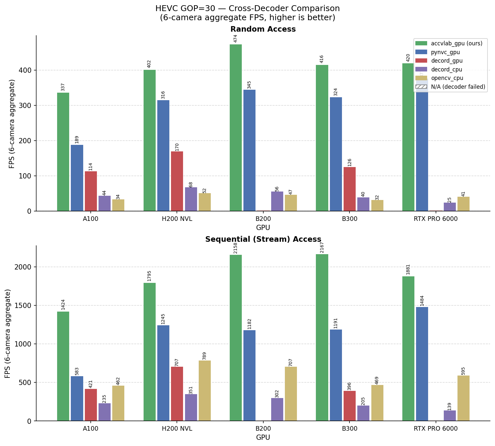
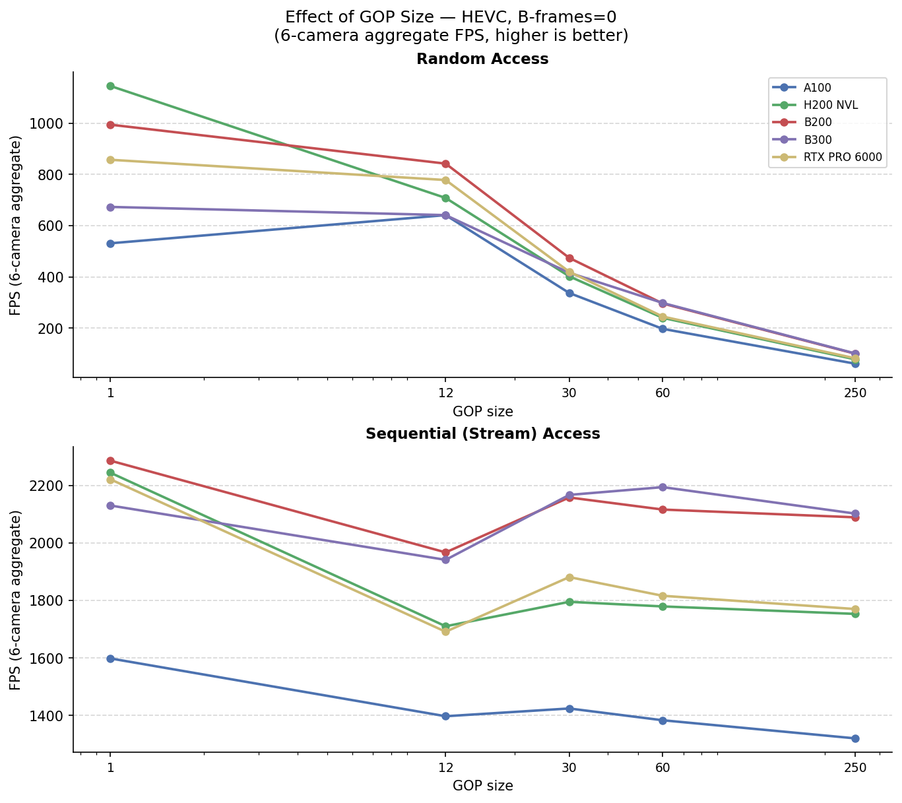
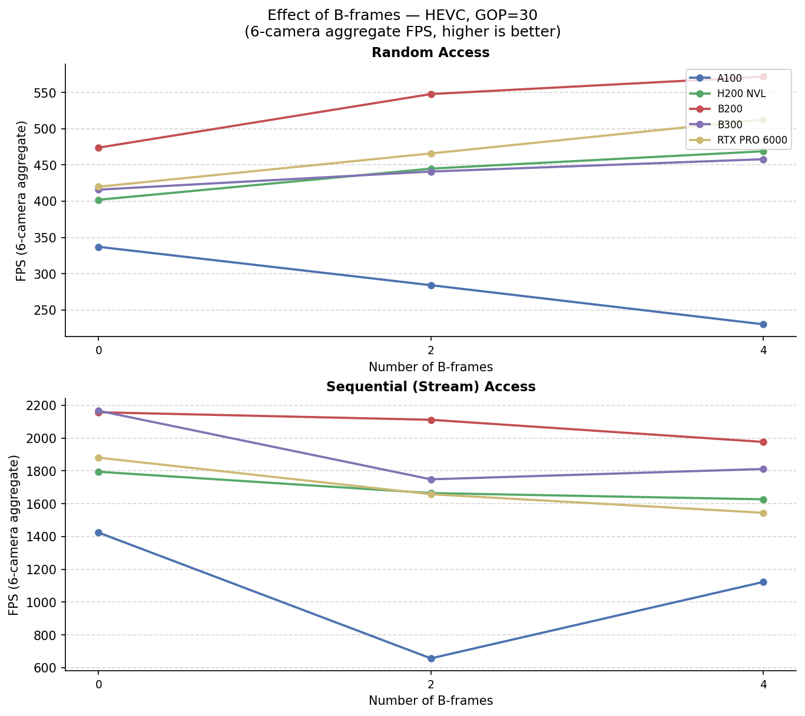
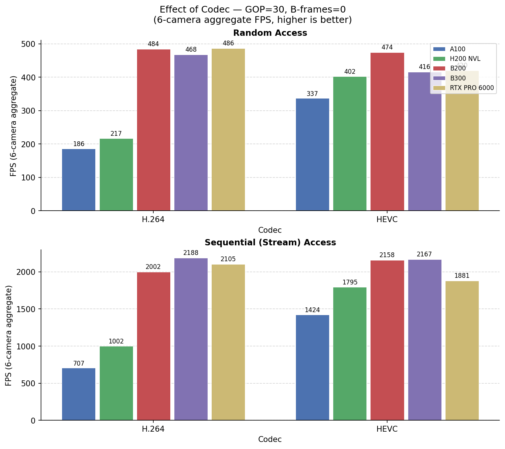
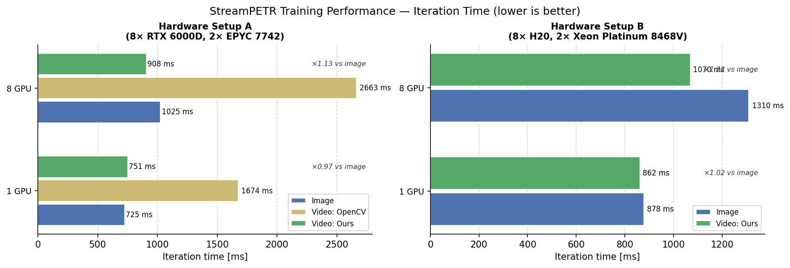

Evaluation
Decoder Throughput Benchmark (nuScenes)
This section benchmarks the standalone decoding throughput of multiple decoders across five GPU platforms using nuScenes video clips. All results are 6-camera aggregate FPS (random access, one frame drawn per iteration across all six cameras), measured on a single GPU.
Test Environment
Video clips
Property |
Value |
|---|---|
Source dataset |
nuScenes |
Resolution |
1600 × 900 |
Frame rate |
10 FPS |
Frames per clip |
235 |
Cameras |
6 (CAM_FRONT, CAM_FRONT_LEFT, CAM_FRONT_RIGHT, CAM_BACK, CAM_BACK_LEFT, CAM_BACK_RIGHT) |
Pixel format |
YUV 4:2:0 |
Hardware platforms
GPU |
Compute Capability |
Driver |
CPU |
CPU Cores |
|---|---|---|---|---|
NVIDIA A100 80 GB PCIe |
CC 8.0 (Ampere) |
595.58.03 |
Intel Xeon Silver 4210R @ 2.40 GHz |
10 physical / 20 logical |
NVIDIA H200 NVL |
CC 9.0 (Hopper) |
595.58.03 |
AMD EPYC 9554 |
128 physical / 256 logical |
NVIDIA B200 |
CC 10.0 (Blackwell) |
610.43.02 |
Intel Xeon Platinum 8570 |
112 physical / 224 logical |
NVIDIA B300 |
CC 10.3 (Blackwell) |
610.43.02 |
Intel Xeon 6776P |
128 physical / 256 logical |
NVIDIA RTX PRO 6000 Blackwell Server Edition |
CC 12.0 (Blackwell) |
595.58.03 |
Intel Xeon Platinum 8480+ |
112 physical / 224 logical |
All nodes run CUDA 12.9 inside a nvcr.io/nvidia/pytorch:25.05-py3 container.
Decoder versions
Decoder |
Library / Version |
Backend |
|---|---|---|
|
accv_lab.on_demand_video_decoder |
NVDEC |
|
PyNvVideoCodec 2.1.0 |
NVDEC |
|
decord 0.6.0 |
NVDEC |
|
decord 0.6.0 |
FFmpeg software decode |
|
OpenCV 4.11.0 |
FFmpeg software decode |
All GPU builds use FFmpeg 4.4.6 with nv-codec-headers n11.1.5.3.
CPU decoders (decord_cpu, opencv_cpu) run on the host CPU listed in the hardware table above.
HEVC GOP=30 — Cross-Decoder Comparison
Random-access and sequential FPS (6-camera total) for the hevc_gop30_bf0 configuration.
Hatched bars indicate the decoder failed on this config due to a known decord 0.6 EOF-retry bug.
{kind=link}

On-demand Video Decoder - Across Video Configurations and Hardware
6-camera aggregate FPS for accvlab_gpu. Each pair of tables varies one encoding parameter
while the other two are held at their defaults (HEVC, GOP = 30, B-frames = 0).
Effect of GOP size — HEVC, B-frames = 0
{kind=link}

Effect of B-frames — HEVC, GOP = 30
{kind=link}

Effect of Codec — GOP = 30, B-frames = 0
{kind=link}

StreamPETR Training Performance
The on-demand video decoder was used for training a StreamPETR model on the NuScenes mini dataset and compared to the performance to both the original StreamPETR implementation (with image-based training), and in one case to OpenCV-based video training. The results are shown below.
Setup
For the video training, the demuxer-free approach is used (see DataLoader Demuxer-Free Example for details on this approach). Here, the Serialized GOP bundles are extracted and stored prior to the training.
In the video training, the frames are decoded in the training process, and consequently, pre-processing is performed in the training process on the GPU. Note that this is not a viable optimization for the image-based training, as it adds significant overhead when passing the full-resolution images to the training process.
The training is performed for the NuScenes mini dataset, with the following configuration:
Video
GOP size of 30
No B-frames
Including both samples and sweeps (resulting in ~12 frames per second)
1600x900 resolution (same as images)
Batch size of 16 per GPU
Note
We are planning to add a demo for the On-Demand Video Decoder package in the future, including the implementation of the experiments performed in this evaluation.
Hardware Setup A
GPU |
CPU |
|---|---|
8x NVIDIA RTX 6000D |
2x AMD EPYC 7742 64-core Processors |
Hardware Setup B
GPU |
CPU |
|---|---|
8x NVIDIA H20 |
2x Intel Xeon Platinum 8468V 48-core Processors |
Results & Discussion
Results for both hardware systems are shown below.
{kind=link}

On both systems, the performance of the video-based training is comparable to the image-based training for the 1 GPU configuration. The video training outperforms the image training for the 8 GPU configuration, with the speedup depending on the system. However, please note that the main goal is to reduce the storage requirements while maintaining good performance.